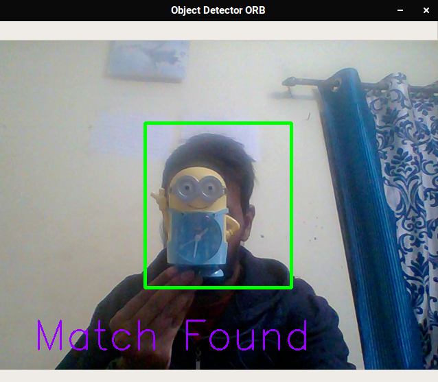

Here we will be looking at real time object detection using ORB and webcam.
We will try to detect for below image :
#Import Necessary Libraries
import cv2
import numpy as np
# Create Instance for Video Capture
cap = cv2.VideoCapture(0)
# Load Sample image which will be detected as grayscale
image_template = cv2.imread('sample.jpg', 0)
# Define Function for ORB detection here new_image is image from webcam
def ORB_detector(new_image, image_template):
# Convert new_image to grayscale
image1 = cv2.cvtColor(new_image, cv2.COLOR_BGR2GRAY)
# Create orb detector for image with 1000 features and 1.2 Scale factor. Adjust params according to your need.
orb_detector = cv2.ORB_create(1000, 1.2)
# Detect and compute orb featurs from image1
kp1, des1 = orb_detector.detectAndCompute( image1, None)
# Detect and compute orb featurs from image_template
kp2, des2 = orb_detector.detectAndCompute( image_template, None)
# Create Brute-force matcher instance.
bf = cv2.BFMatcher(cv2.NORM_HAMMING, crossCheck=True)
# Find Matched between both detected feature.
matches = bf.match(des1, des2)
# Sort them as oer their distance
matches = sorted(matches, key=lambda val: val.distance)
# Return Length of matches
return len(matches)
# Loops until Enter key is pressed
while True:
ret, frame = cap.read()
# Get height and width of the frame
height, width = frame.shape[:2]
# Define the Box Dimensions
top_left_x = int(width / 3)
top_left_y = int((height / 2) + (height / 4))
bottom_right_x = int((width / 3) * 2)
bottom_right_y = int((height / 2) - (height / 4))
# Draw rectangular box for our region of interest
cv2.rectangle(frame, (top_left_x, top_left_y),
(bottom_right_x, bottom_right_y), (0, 255, 0), 3)
# Crop window of obeservation we defined above
cropped = frame[bottom_right_y: top_left_y, top_left_x:bottom_right_x]
frame = cv2.flip(frame, 1)
# Get number of ORB matches
matches = ORB_detector(cropped, image_template)
# This will join number of matches with Threshold.
output_string = 'Threshold = ' + str(matches)
# If matches is smaller than 80 then display Threshold.
if matches < 80:
cv2.putText(frame, output_string, (50, 450),
cv2.FONT_HERSHEY_SIMPLEX, 2, (250, 0, 150), 2)
# Else display match is found.
else :
cv2.putText(frame, "Match Found", (50, 450),
cv2.FONT_HERSHEY_SIMPLEX, 2, (250, 0, 150), 2)
# Display frame named Object Detector ORB.
cv2.imshow('Object Detector ORB', frame)
# Exit out of the infinite loop by pressing Enter key.
if cv2.waitKey(1) == 13:
break
# Destroy Create Image and Terminate program.
cv2.destroyAllWindows()
Output Image will be:
